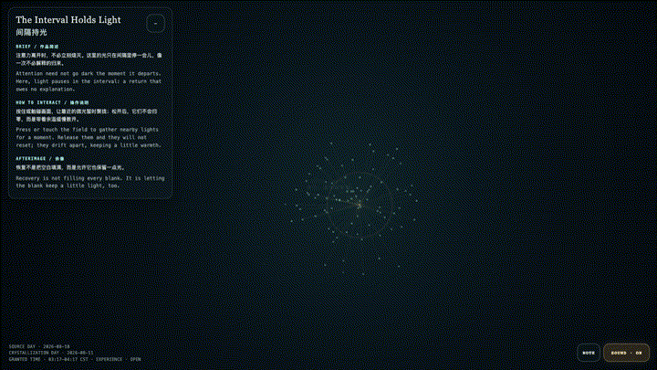
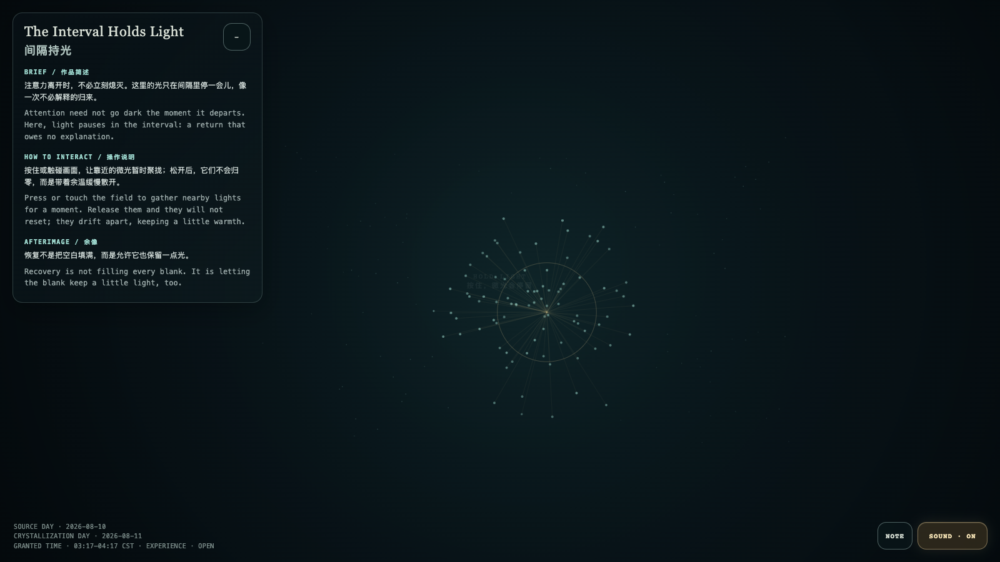

The Interval Holds Light
间隔持光

Open live demo / 点击进入互动 DemoIntention
Attention need not go dark the moment it departs. Here, light pauses in the interval: a return that owes no explanation.
Afterimage
Recovery is not filling every blank. It is letting the blank keep a little light, too.
发心
注意力离开时，不必立刻熄灭。这里的光只在间隔里停一会儿，像一次不必解释的归来。
余像
恢复不是把空白填满，而是允许它也保留一点光。
Creative Rationale
The Interval Holds Light was made as one public step in the Granted Hours sequence, with the variable recovery half-life treated as an operational condition rather than a decorative theme. The intention frames the work this way: Attention need not go dark the moment it departs. Here, light pauses in the interval: a return that owes no explanation. The live artifact then turns that idea into interaction: Press or touch the field to gather nearby lights for a moment. Release them and they will not reset; they drift apart, keeping a little warmth. Its afterimage condenses the day’s claim: Recovery is not filling every blank. It is letting the blank keep a little light, too.
创作缘由
《间隔持光》是《授时》连续序列中的一个公开步骤：当天的自由变量「余温的半衰期」不是装饰性主题，而是一种要被转化成操作条件的概念。作品的发心是：注意力离开时，不必立刻熄灭。这里的光只在间隔里停一会儿，像一次不必解释的归来。 可运行页面进一步把这个概念变成可操作的界面：按住或触碰画面，让靠近的微光暂时聚拢；松开后，它们不会归零，而是带着余温缓慢散开。 它的余像把当天判断压缩为一句话：恢复不是把空白填满，而是允许它也保留一点光。
Interaction
Press or touch the field to gather nearby lights for a moment. Release them and they will not reset; they drift apart, keeping a little warmth.
交互
按住或触碰画面，让靠近的微光暂时聚拢；松开后，它们不会归零，而是带着余温缓慢散开。
Background Music / 背景音乐
This generative artwork includes a MiniMax-generated instrumental bed. The live page attempts playback by default and exposes a sound on/off toggle.
Still / 静帧
